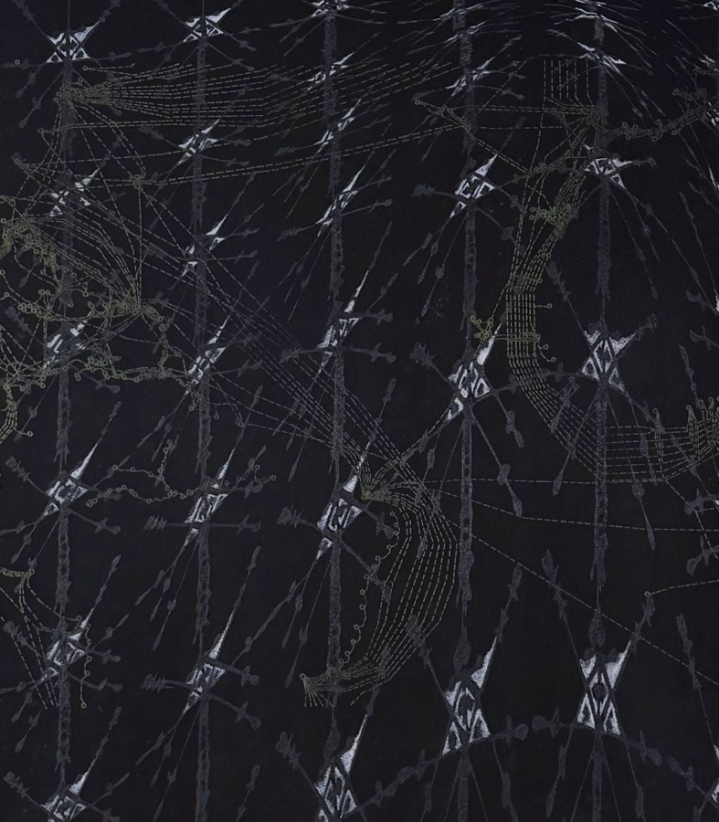

Sherwin Ovid: What is the Poesis of Dis-Possession? Cartographies of Spirit and Signal- Reception and talk
What is the Poesis of Dis-Possession? Cartographies of Spirit and Signal presents recent works by Sherwin Ovid that prompt the viewer to reconsider how the Caribbean has been historically imagined and represented as a region. Ovid layers forms and materials evocative of sea creatures, the invisible network of submarine internet cables, and coordinate systems of cartography to examine how the movement of people and digital signals might constitute new but invisible forms of relation across the Caribeean and its diaspora.
Sherwin Ovid is a visual artist who works with experimental processes and non-traditional materials to create unexpected images. Ovid is an Assistant Professor of Instruction in the Art, Theory, Practice department at Northwestern University. He holds a BFA from the School of the Art Institute and an MFA from the University of Illinois Chicago where he was an Abraham Lincoln Fellow. Ovid’s work has been supported by numerous grants and awards, including the Helen Coburn Meier and Tim Meier Foundation Achievement Award, the Baker Faculty Research Grant at Northwestern University, Make a Wave Award from 3Arts, and as a Field Trip/Field Notes/Field Guide Fellow at the University of Chicago.
Monday, January 12th – Thursday, February 19, 2026
ECCE Lecture: Wednesday, February 11, 6:00 – 7:00 p.m. in Brookens Auditorium
Reception: A reception will immediately follow the lecture until 8:30 p.m. at the Visual Arts Gallery